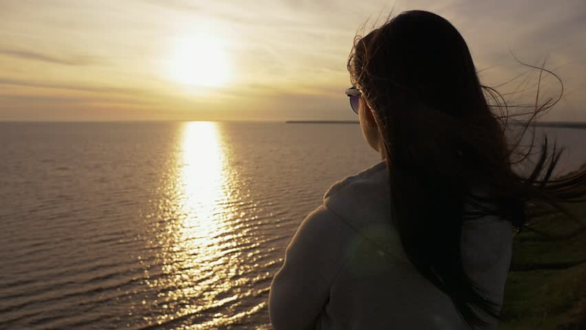

About me
My name is Gelila Kidane, I was born in Addis Ababa Ethiopia. I am originally an Eritrean; Eritrea is a
country in the horn of east Africa. I came to United States of America 4 years ago. Currently I am
a student at Edmonds College. My goal is to be software developer in the near future.

Through my passion for computers, I have a keen interest in programming, Desktop support &
networking in the vast field of IT. I am currently completing the certificate degree in Web
Developer Certificate. As a part-time job, I work in the IT Help desk department of Edmonds
college.
Apart from the above, I like to travel, visit historical placess, experiencing different culture and
also enjoy reading books, watching movies, swimming and most importantly spending time with
my family.
My five-years plan of my life includes getting a bachelor’s degree in software development and
working at one of the fortune 100 companies. In addition, I envisage myself to be a role model to
women and minorities by being a good example and contributions to society.
Thank you for visiting my website! Please spare a few minutes to leave your comment on my Guestbook